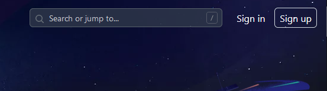
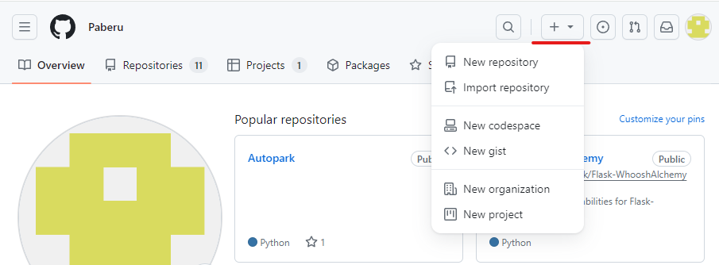
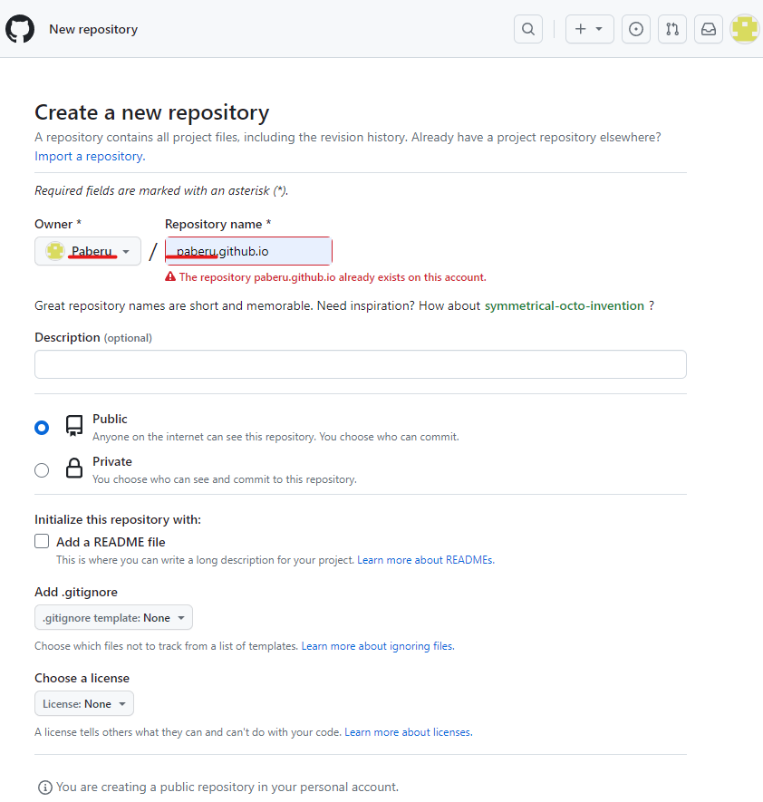
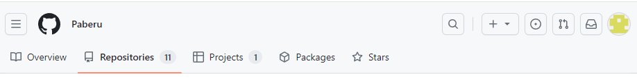
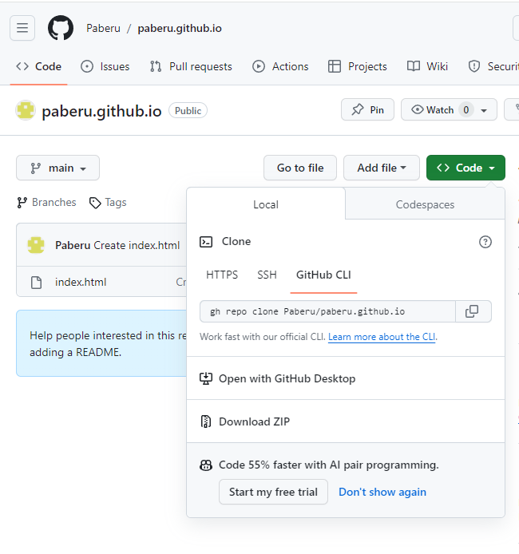
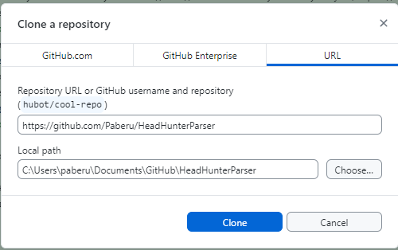
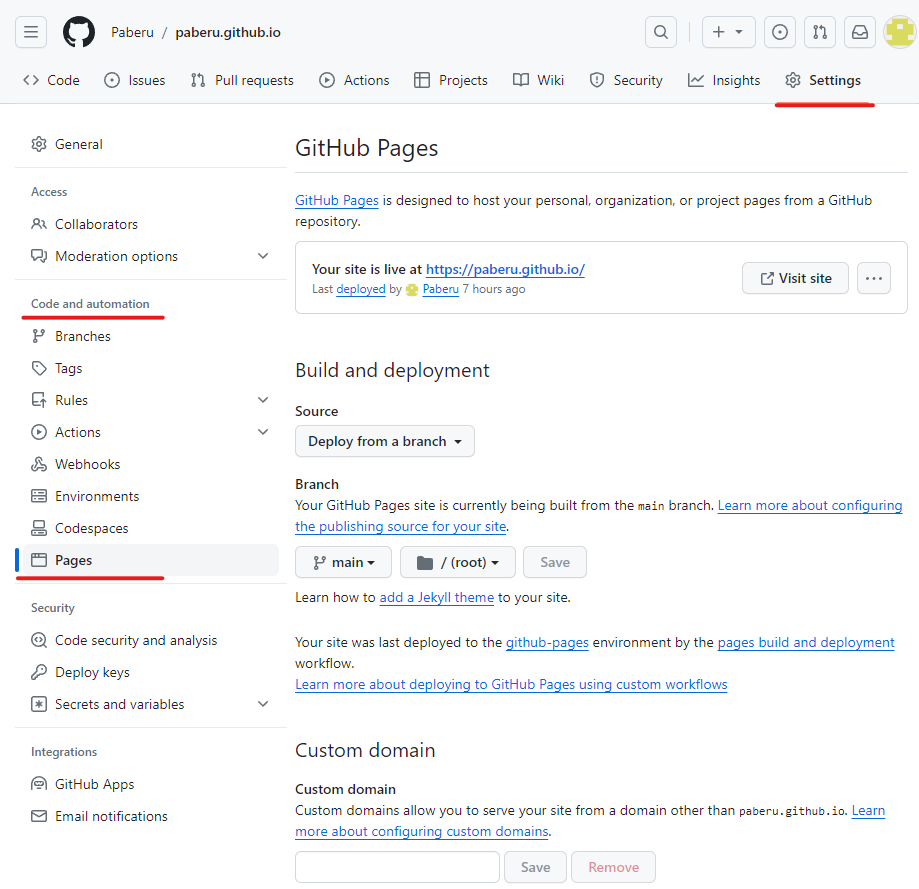

В принципе, ведение дневника - это всегда хорошая практика. Например, кто-то использует дневниковые техники на психоанализе, и исправляет в себе то, что отравляет жизнь. Кто-то записывает все "грабли" и открытия, с которыми столкнулся в процессе профессионального роста. Даже если потом оказывается, что большая часть записей проста и самоочевидна, она кажется такой с высоты профессионального и жизненного опыта.
Поэтому первое, с чего я начну свой дневник на GitHub, так это с того, как я создавал дневник на GitHub, мало ли, кому ещё пригодится.
Скорее всего, учетная запись на GitHub у Вас уже есть, если нет, заводится она легко: достаточно зайти на https://github.com/ и найти в правом верхнем углу кнопки Sign in и Sign up:

На любой странице выберите кнопку с "+" и выберите New repository (Новый репозиторий)

Крайне важно, чтобы первая часть имени репозитория совпадала с именем владельца репозитория, иначе могут быть проблемы с доступом.
Остальное можно оставить по умолчанию. Если хочется, можно проинициализировать репозиторий файлом README, но лучше заранее подготовить файл index.html или index.md, который станет начальной страницей блога.

Далее остаётся лишь нажать Create repository.
Далее следует перейти на страницу Ваших репозиториев

и найти недавно созданный репозиторий блога. Перейти в него.
Жмите кнопку Code и выбирайте "Open with GitHub Desktop"

и Ваш репозиторий откроется в настольном приложении GitHub Desktop. Старожилы возмутятся, мол, серьёзные товарищи пользуются только консолью, потому что так быстрее, удобнее и профессиональнее. Но по факту большой разницы нет, воспользуется человек консольным приложением или будет щёлкать мышью. Я убеждён, что человек, привычный к работе с консолью, без труда справится с тем, чтобы ловко и безболезненно создать репозиторий для блога. Этот мануал будет полезен тем, кто только-только движется в данном направлении.
Потом надо убедиться, что Вы скачиваете нужный репозиторий и делаете это в нужную Вам папку. Да, даже пустой репозиторий надо "скачать", т.е. никаких файлов, разумеется, скачано не будет, но GitHub (консольный или графический, не важно) должен проинициализировать указанную в адресе локальную папку, связать её с репозиторием и подготовить служебные файлы (например, файл с возможными в будущем исключениями из команд pull/commit/push/etc). На скриншоте я подтягиваю свой старый проект, т.к. у репозитория блога уже есть прописка на локальном диске:

В указанной папку создайте файл index.html, чтобы у сайта всегда была титульная страница. Писать надо на голом HTML, как подтянуть Jekyll, чтобы облегчить творческий процесс, будет далее.
Далее остаётся только сделать "Commit to main" в левом нижнем углу, и выполнить "Push origin" в середине правой части экрана.
Случается, что после загрузки index.html в репозиторий что-то идёт не по плану, и вместо начальной страницы мы наблюдаем страницу с кодом 404. Надо зайти на страницу репозитория, найти пункт Settings (Настройки), и в разделе "Code and automation" выбрать пункт Pages. Убедитесь, что правильно указана ветка репозитория, проверьте, если в index.html лежит в корневой папке репозитория, в настройках должно быть указано main /(root):

Этого должно хватить для того, чтобы у Вас появился свой блог на GitHub в самом простом его виде - голый HTML на полностью ручном управлении. Удачи!